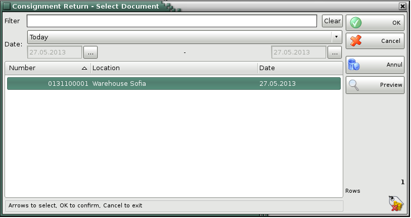
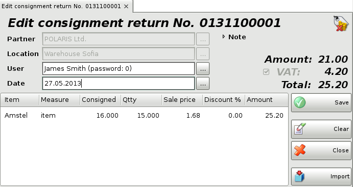

Edit consignment return
In the Consignment Return� select document window select the document you wish to edit or print and click the OK button.

Use the Edit Consignment return window to edit or delete an existing consignment.
The Filter option allows you to quickly position on a particular document by typing its number or by typing all or part of the partner�s name. To remove specified filter click on the Clear button.

The User field allows you to edit the name of the user, who has performed the operation. You can visualize the list by pressing the F4 key.
You can type a new value in the Qtty field if you wish to modify the current quantity.
To remove a particular item form the document, change its quantity to zero. To cancel the entire document, set all quantities to zero.
Double-click the date of the document if you wish to change it. The Calendar window will pop-up. You can choose a new date by double-clicking it or by clicking the OK button. Press the F9 key to save the document.
�2006-2015 Microinvest, All rights reserved